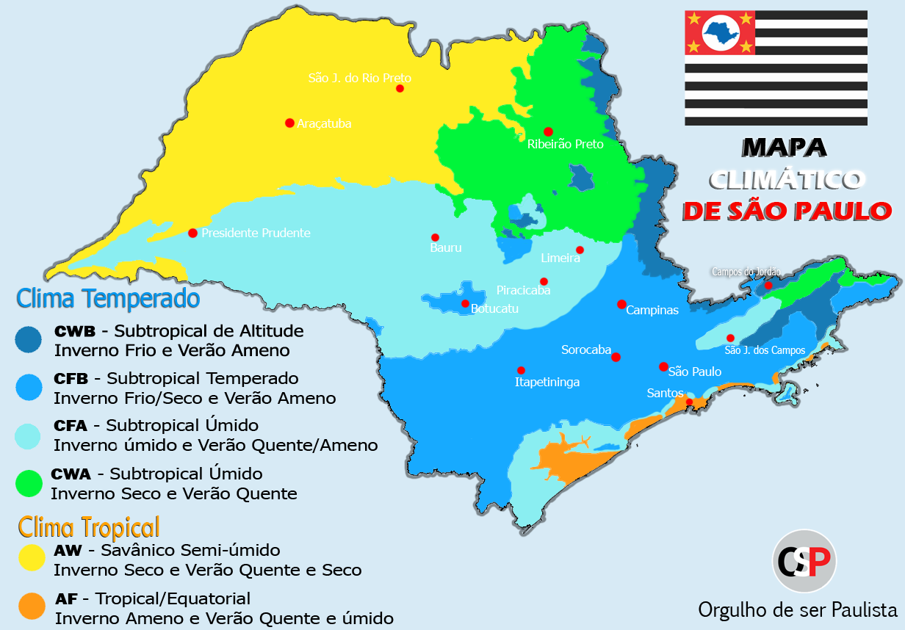

A região metropolitana de Sorocaba, localizada no interior do Estado de São Paulo, possui características climáticas específicas que influenciam diretamente os produtores rurais da área. O clima na região é classificado como subtropical úmido, apresentando variações sazonais bem definidas ao longo do ano. Durante o verão, que vai de dezembro a março, a região experimenta um clima quente e úmido. As temperaturas podem atingir valores elevados, com médias que variam entre 25°C e 30°C. Nessa época, ocorrem chuvas frequentes, o que é benéfico para o desenvolvimento de culturas como milho, soja, feijão e hortaliças, que necessitam de umidade para seu crescimento. No entanto, é importante destacar que as chuvas intensas também podem trazer alguns desafios, como o excesso de umidade e a possibilidade de enchentes em áreas mais baixas. Com a chegada do outono, entre abril e junho, as temperaturas começam a diminuir gradualmente, com médias que variam entre 18°C e 25°C. Nessa estação, ocorre uma redução na quantidade de chuvas, tornando o clima mais ameno e seco. Essa época do ano é favorável para o plantio de culturas como batata, mandioca e frutas de clima temperado, como maçã e pêssego. O inverno, entre julho e setembro, é caracterizado por temperaturas mais baixas, especialmente durante a noite, com médias entre 10°C e 20°C. Nessa estação, ocorre uma redução significativa das chuvas, podendo afetar algumas culturas mais sensíveis à falta de água. No entanto, o inverno também é propício para o cultivo de frutas cítricas, como laranja e limão, que se adaptam bem ao clima mais frio. Com a chegada da primavera, entre outubro e novembro, as temperaturas começam a aumentar gradualmente, variando entre 20°C e 28°C. Essa estação é caracterizada pelo aumento das chuvas e pelo clima mais quente. É uma época de transição entre o inverno e o verão, sendo favorável para o plantio de diversas culturas, incluindo legumes, verduras e frutas tropicais. Além dessas características sazonais, a região metropolitana de Sorocaba também apresenta um relevo diversificado, com áreas de planície e regiões mais montanhosas. Essas variações topográficas podem influenciar o microclima local, afetando a distribuição das chuvas e as temperaturas em determinadas áreas. Portanto, para os produtores rurais da região metropolitana de Sorocaba, é essencial acompanhar as previsões meteorológicas atualizadas e adaptar as práticas agrícolas às condições climáticas específicas de cada estação. O planejamento adequado, o manejo correto da água e a seleção de culturas adaptadas às variações sazonais são fundamentais para o sucesso das atividades agrícolas na região.
Mapa
